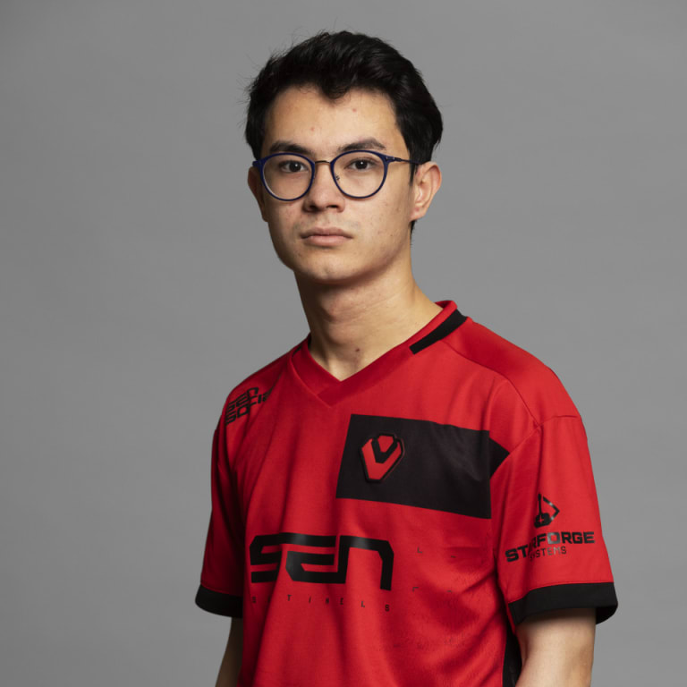

Valorant
Tenz
 The face of Valorant. Tenz is by far the most popular Valorant player in the world. His dominating performance in the 1st international Valorant tournament left a kill record that has still not been broken to this day. Not enough can be said about Tenz, the humble King of Clout, AimLabs prodigy, and future husband of Kyedae.
The face of Valorant. Tenz is by far the most popular Valorant player in the world. His dominating performance in the 1st international Valorant tournament left a kill record that has still not been broken to this day. Not enough can be said about Tenz, the humble King of Clout, AimLabs prodigy, and future husband of Kyedae.
Zellsis
 An unmistakable force in the world of Valorant. Zellsis joined our team this offseason against our will. We have continually threatened to remove him from the team, but we have yet to lose with him on the roster so we're left in a tricky position. He asks that we refer to him as "Zaddy", but as you can see we are unwilling to do that at this time.
An unmistakable force in the world of Valorant. Zellsis joined our team this offseason against our will. We have continually threatened to remove him from the team, but we have yet to lose with him on the roster so we're left in a tricky position. He asks that we refer to him as "Zaddy", but as you can see we are unwilling to do that at this time.
Sacy
 Brazilian superstar and Valorant World Champion. We signed Sacy to our valorant roster in late 2022 for his extreme FPS skill and leadership, but he insists his success comes from his "bald buff" - which he invented. Father to "Zekinha", he balances family time with team practice and has found true balance in his life.
Brazilian superstar and Valorant World Champion. We signed Sacy to our valorant roster in late 2022 for his extreme FPS skill and leadership, but he insists his success comes from his "bald buff" - which he invented. Father to "Zekinha", he balances family time with team practice and has found true balance in his life.
JohnQT
 The brains behind the Sentinels Valorant team. On top of speaking 5 languages, he's an IGL who can frag out. This proved itself valuable this offseason as he crushed the competition with an undefeated record of 11-0. Also - mysteriously - his real name isn't John.
The brains behind the Sentinels Valorant team. On top of speaking 5 languages, he's an IGL who can frag out. This proved itself valuable this offseason as he crushed the competition with an undefeated record of 11-0. Also - mysteriously - his real name isn't John.
Zekken

A true prodigy in the Valorant scene. Zekken stunned the world by being one of the best players anyone had ever seen while simultaneously being in the 4th grade. Zekken brings initiation to the team both by being our designated entry in Valorant, and by trolling people nonstop online. His one weakness is peanuts, of which is deathly allergic.